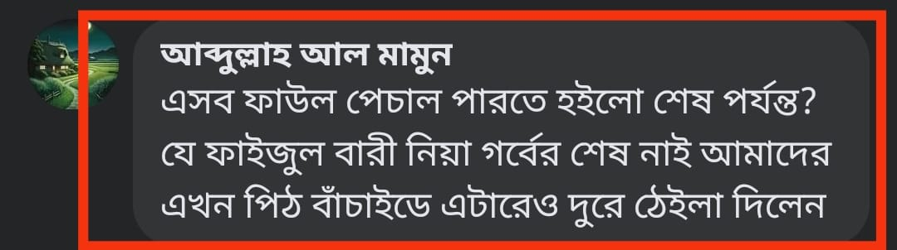

পিঠ বাঁচানোর শেষ অপচেষ্টা
২৬ জুলাই, ২০২৩
পিঠ বাঁচানোর শেষ অপচেষ্টা:
পিঠ বাঁচাতে কালামি ভাইয়েরা এমন অনেককিছুই করেছেন, যা রীতিমতো হাস্যরসের জোগান দেয়। পিঠ বাঁচাতে তারা ইমাম কাশ্মিরি রাহ-এর কিতাবকে ছাত্রের লিখিত বলে দূরে ঠেলে দেয়। এরপর ইমামে আজম আবু হানিফা রাহ. থেকে তাঁরই ছাত্র আবু মুতি' হাকাম বিন আব্দিল্লাহ আল-বলখির বর্ণনায় “আল-ফিকহুল আকবর” কিতাবকেও তারা অস্বীকার করে। অথচ, তাদের আকাবির আল্লামাহ কাশ্মিরি রাহ. বলখিকে তাওসিক করে বলেন, هو عندي صدوق (তিনি আমার নিকট সত্যবাদী)
ইমাম কাশ্মিরি রাহ-এর ছাত্র ইউসুফ বিন্নুরি রাহ. এ বক্তব্য সমর্থন করে আল-ফিকহুল আকবরকে ইমাম আবু হানিফা রাহ. থেকে প্রমাণিত হওয়ার স্বীকারোক্তি দিয়েছেন। [বিস্তারিত: মাআরিফুস সুনান-৪/১৩৬]
তবুও নব্য কালামিরা এটাকে অস্বীকার করতে চায় পিঠ বাঁচানোর উদ্দেশ্যে। যাক সে কথা। ফিরে আসি কাশ্মিরির কিতাবের আলোচনায়।
তাঁর বিখ্যাত ছাত্র বদরে আলম মিরাঠি রাহ. সংকলন করেছেন বুখারির ব্যাখ্যাগ্রন্থ “ফায়ফুল বারি”
তাঁর আরেক ছাত্র মাওলানা চেরাগ মোহাম্মদ সংকলন করেছেন তিরমিজির ব্যাখ্যাগ্রন্থ “আল-আরফুশ শাজি”
কাশ্মিরির মতো মানুষের ছাত্র কেমন যোগ্য আর অভিজ্ঞ হতে পারে, তা প্রমাণ করার অপেক্ষা রাখে না।
সুতরাং এখানে অভিযোগ একটাই করা যায় যে, নিশ্চয়ই এই দুই সংকলক মিথ্যাবাদী, প্রতারক ও ধান্ধাবাজ। ইবনু তাইমিয়া রাহিমাহুল্লাহর সমর্থনে ওস্তাদ কাশ্মিরির নামে মিথ্যাচার করেছেন। তা-ও একজন নয়; দু'জনে সমান মিথ্যার করেছেন— এমন অভিযোগ করার সাহস কি নব্য কালামিরা রাখে?! রাখে না। একই মিথ্যাচারে আংশিক শামিল হবেন ইউসুফ বিন্নুরিও। কেননা এ সমর্থনের অংশবিশেষ তিনিও উল্লেখ করেছেন। পিঠ বাঁচাতে তারা কাশ্মিরির ক'জন ছাত্রকে তাকজিব করার ক্ষমতা রাখে!
